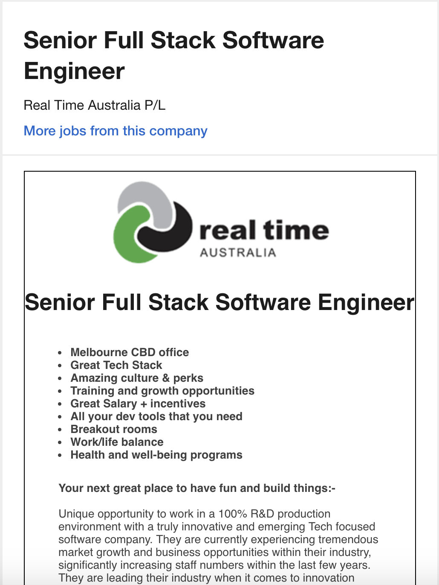
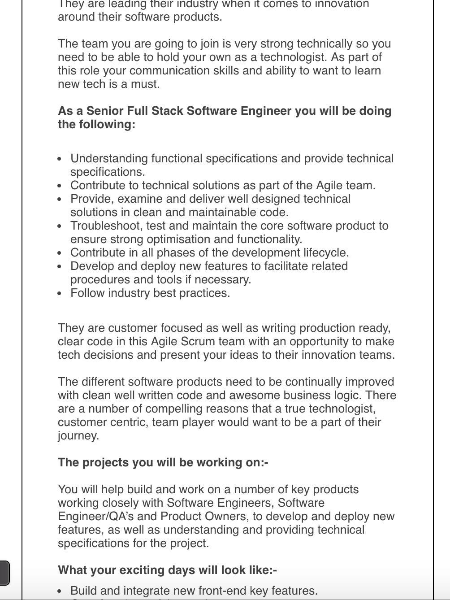

Ideal
Job


A description of the position, and particularly what makes this position appealing to you.
The job of being a "Full-Stack Software Engineer" is appealing to me as my goal is to learn enough to be able to develop at the abilities of a Full-Stack Software Engineer. Other than only being able to develop front-end or back-end.
A description of the skills, qualifications and experience required for the position.
To be a Full-Stack develop you must be well equipped with working in both back-end and front-end development, as well as experience in working with them both together. This will mean at least 2 years in back-end and 2 years front-end at least.
A description of the skills, qualifications and experience you currently have.
Some experience in front end development with Javascript, HTML and CSS, and some experience in database work in SQL. Some experience in Python, Java, VB.NET.
A plan describing how you will obtain the skills, qualifications and experience required for the position, building on those you have now. This need not be greatly detailed, but try to be as specific as you can.
I plan to obtain the skills and qualifications through the Bachelor of IT degree at RMIT, and from that, hope to get some experience working in the industry from the knowledge I have obtained (working in Java and SQL etc.), while also building on that knowledge by working on personal projects outside of work. This should allow me to obtain the skills and qualifications required as long as I make sure that the work I do varies from both front end development and back end development.
- © Untitled
- Design: HTML5 UP